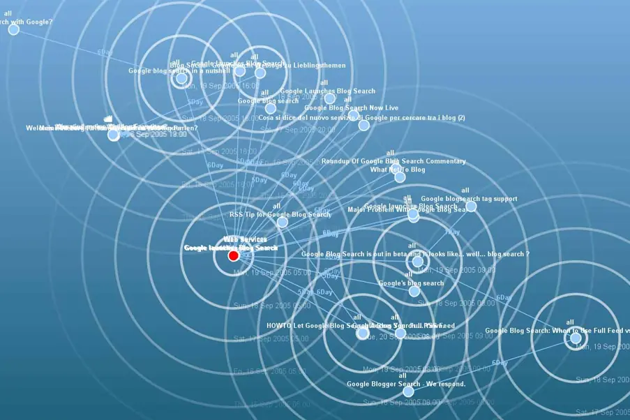
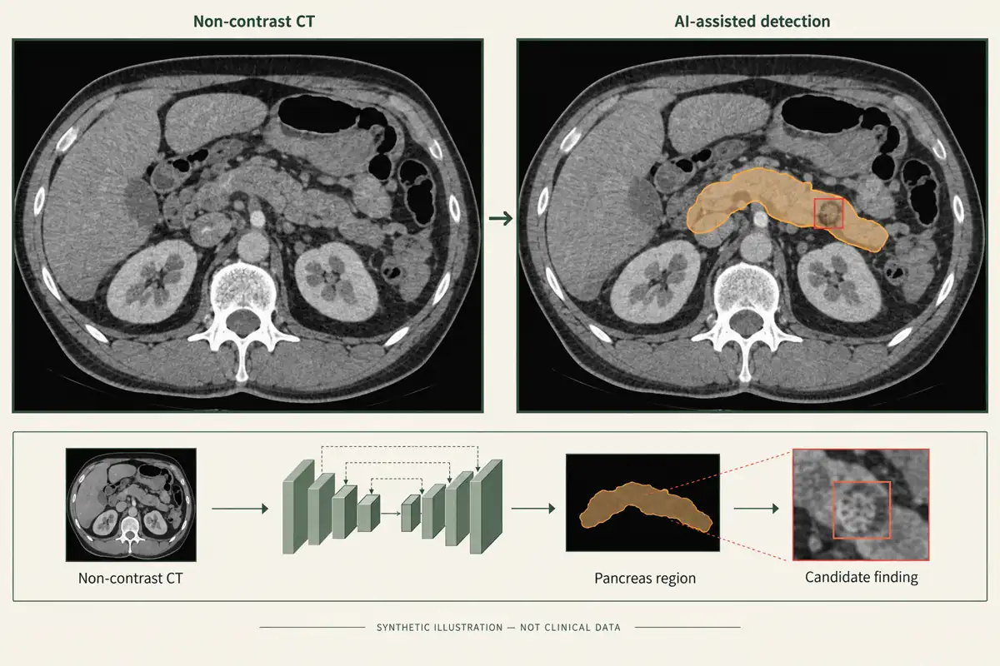
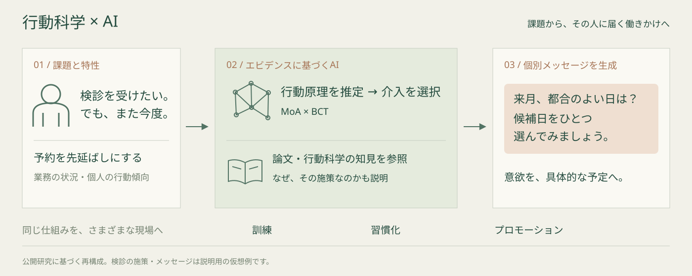
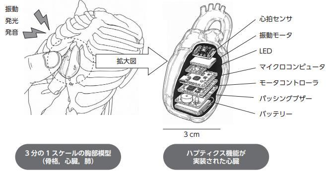
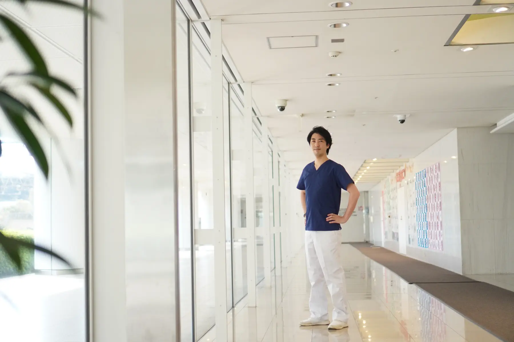

インタラクティブ・プログラミング研究室
01 / HCI
複雑な情報を、
人に届く表現へ。
ブログの話題が広がる軌跡を、時間とリンク構造から可視化したRipple Presentation。大学院修了後には、個人制作のVisualDataで電機産業35年の変化を動画と可視化にし、広く届けました。
VisualDataを体験 ↗COMPUTER VISION × HCI × DIGITAL HEALTH
情報を、人が理解し、
行動できる体験に変える。
THE QUESTION / 研究を貫く問い
情報を見やすくする。医師が病変を見つけるのを支える。その先で、本人が自分の健康に向き合うには、どんな体験が必要なのか。
技術を磨くことと、人の理解と行動を支えることを、ひとつにつなぐ。これが、私の研究を貫く問いです。
01 / CONVERGING EXPERTISE
HCIで、情報と人の接点をつくる。
Computer Visionで、身体の情報を読み解く。
Digital Healthで、健康と行動を考える。
研究と実装を通して培ってきた専門性が、いま「自分の身体を触って理解する」という博士研究に重なっています。

01 / HCI
ブログの話題が広がる軌跡を、時間とリンク構造から可視化したRipple Presentation。大学院修了後には、個人制作のVisualDataで電機産業35年の変化を動画と可視化にし、広く届けました。
VisualDataを体験 ↗
02 / CV × Digital Health
CT画像の位置合わせを開発・実用化。その後、プレシジョンヘルスの研究をリードし、非造影CTによる膵臓がんの検出支援、造影MRIによる転移性肝腫瘍などの検出支援AIの開発へ広げてきました。
プレシジョンヘルス紹介動画 ↗CTの図は公開研究に基づく説明用再構成（AI生成）です。架空のCT・検出例であり、実際の患者画像や検出結果ではありません。

03 / Digital Health × HCI
医療AIで「見つける」を支えた先に、本人が健康に向き合い、行動するための支援があります。BXPFでは、業務課題からAIが行動の背景を推定し、行動科学のエビデンスと結び付けて施策を提案。訓練・習慣化・プロモーション向けのメッセージやアプリへ展開します。
BXPFの共著公開記事 ↗行動の背景にある原理（MoA）と、働きかけの方法（BCT）を結び付け、根拠に基づく施策設計へ。用途や個人特性に合わせた提示内容・順序・表現も含めて設計します。
MoA・BCTを用いた介入設計 ↗用途・個人特性に応じたカスタマイズ ↗
見えるようにする。身体を読み解く。行動につなぐ。
次に問うのは、自分の身体に「触れる」体験が、健康を自分ごとにするきっかけになるか。
三つの専門性を、この問いのもとに重ねる研究が Haptic Anatomy です。
02 / CURRENT RESEARCH · 筑波大学 博士研究
「自分の身体」を、手の中に。
医用画像から自分の臓器をかたちにし、心拍と同期する振動・音・光を重ねる。画像を解析する技術、人に伝わる体験の設計、健康行動への問いを、ひとつの模型に融合しています。
自分の身体を「見る」から「触れて感じる」へ。その体験が、記憶や健康意識、検診などの行動にどうつながるかを探究しています。
プロトタイプ・仮説検証の段階。実際の健康行動への効果は、今後検証する研究課題です。
プロトタイプの公開映像 ↗ 書籍コラムの掲載情報 ↗『コンバージングテクノロジー』コラム7に寄稿（誠信書房、2026年）。


03 / ABOUT THE RESEARCHER
Masaki Ishihara
情報に、手触りを。
技術に、命の実感を。
研究と実装を、
分野の境界を越えて。
石原正樹。情報可視化、医用画像解析、行動科学とAIの融合に取り組む研究者。筑波大学大学院 博士後期課程で、Haptic Anatomyを研究しています。
ENGLISH SUMMARY
I am Masaki Ishihara, a researcher connecting human–computer interaction, computer vision, and digital health. My work spans information visualization, medical imaging AI, and behavioral science. These experiences converge in my doctoral research at the University of Tsukuba: Haptic Anatomy, personalized organ models with heartbeat-synchronized sensory feedback. I explore how tangible, self-relevant experiences may support memory and health awareness. Effects on health behavior remain a research question.